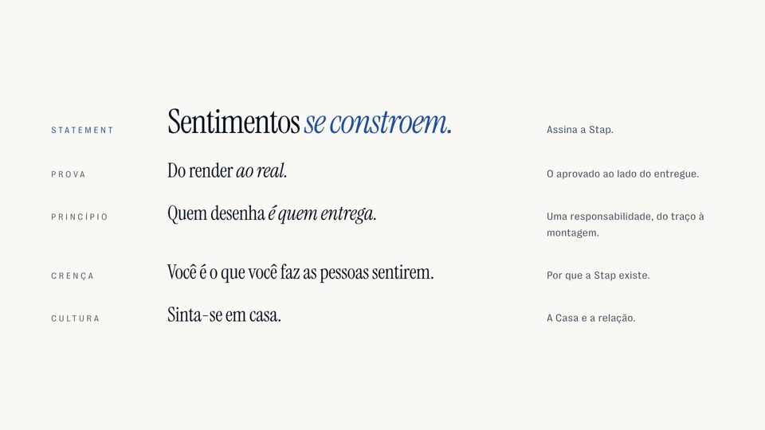

01 · Apresentações e peças
Apresentações e peças.
Os materiais da identidade 2026 em um lugar só. Abra online para apresentar ou baixe o arquivo para mandar.

Estudo e posicionamento
Statement 2026
A Stap hoje, o mercado, o statement, a marca e o sistema. Versão online com animações; PDF e PPT como backup.
02
Deck comercial
A apresentação comercial nova, com todos os cases. Abre no navegador.
03Site
O site novo da Stap, com os cases em render × real.
04Vídeo manifesto
O manifesto em movimento, dentro do deck comercial.
05
Redes sociais
Séries e templates de posts. Em breve.